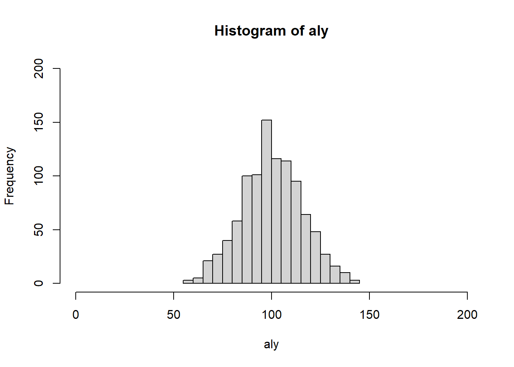
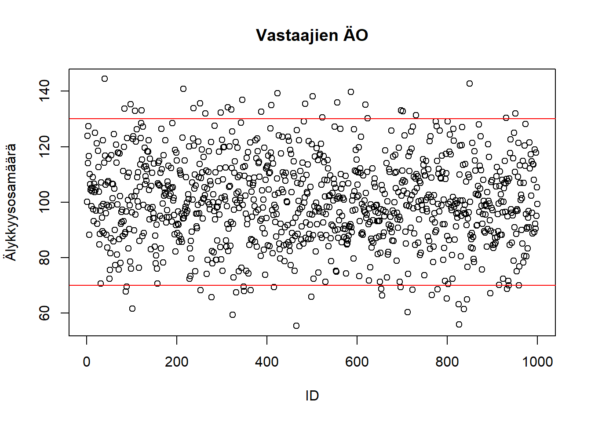

3 Harjoituskerta 3
| Osa | Käsiteltävät asiat (viitteellinen asiasisältö, muutoksia voi tulla) |
| 1 | RStudioon ja R-kieleen tutustuminen |
| 2 | Aineiston kuvailu: frekvenssijakauma, tunnusluvut, kuviot, osa-aineiston poimiminen ja aineston ryhmittäinen tarkastelu |
| 3 | Yksinkertaiset muuttujamuunnokset, kahden muuttujan välinen yhteisvaihtelu, ristiintaulukointi |
| 4 | Korrelaatiot ja hajotakuvio, summamuuttujan tekeminen |
| 5 | Keskiarvotestit: t-testi ja ANOVA |
| 6 | Kertausta ja ohjausta ryhmätehtävään |
3.1 Muuttujien muunnokset
- Alkuperäisiä muuttujia muunnetaan tai luokitellaan uudelleen
- Tavoitteena on esim. aineiston kuvailun tai analysoinnin helpottuminen / mahdollistaminen ja tulkintojen helpottuminen
- Esimerkiksi: aineistossa saatavilla oleva muuttuja on vastaajan syntymävuosi, mutta haluamme raportoida vastaajan iän → syntymävuosimuuttuja muunnetaan kuvaamaan vastaajan ikää
- Toinen esimerkki 2: muuttuja tulee luokitella ennen ristiintaulukointia → jatkuva ikämuuttuja muunnetaan ikäryhmiä kuvaavaksi muuttujaksi
- Usein käytettyjä muuttujamuunnoksia on myös uudelleenkoodaus (recode)
- Uudelleenkoodatessa muuttujia alkuperäisen muuttujan arvot vaihdetaan uusiin arvoihin
- Tarpeen esim. kun halutaan kääntää alkuperäisen muuttujan “suunta” = pienet arvot muutetaan suuriksi arvoiksi ja päinvastoin. Huom! tärkeää summamuuttujia luodessa
- Muuttujan uudelleenluokittelu (yhdistetään muuttujan luokkia)
- Muuttujan luokkia yhdistetään usein silloin, kun luokassa on liian vähän havaintoja
- Esim. Khiin nekiön testin oletukset eivät toteudu → Yhdistetään frekvenssiltään pienimmät luokat
- Luokkien yhdistämisellä täytyy aina olla myös sisällöllisiä / teoreettisia perusteluja
- Uudelleenkoodatessa muuttujia alkuperäisen muuttujan arvot vaihdetaan uusiin arvoihin
Harjoitus a:
Uudelleenluokitellaan muuttuja C7.
library(tidyverse)
# Varmistetaan, että muuttuja C7 on luokaltaan faktori
class(df$C7)## [1] "factor"# Muuttujan frekvenssijakauma
table(df$C7, useNA = "always")##
## Erittäin hyvä Hyvä Kohtuullinen Huono Erittäin huono Kieltäytyy EOS <NA>
## 423 895 519 76 10 1 1 0# Tehdään aineistoon kopio muuttujasta C7 ja asetetaan sen nimeksi terveys
df$terveys <- df$C7
# Tutkitaan funktion levels-avulla faktorin tasoja
levels(df$terveys)## [1] "Erittäin hyvä" "Hyvä" "Kohtuullinen" "Huono" "Erittäin huono" "Kieltäytyy" "EOS"# Yhdistetään luokat Huono ja Erittäin huono
levels(df$terveys)[c(4, 5)] <- "Huono tai erittäin huono"
table(df$terveys, useNA = "always")##
## Erittäin hyvä Hyvä Kohtuullinen Huono tai erittäin huono Kieltäytyy
## 423 895 519 86 1
## EOS <NA>
## 1 0Harjoitus b:
Muodostetaan kurssin harjoitusainestoon ikämuuttuja, joka kertoo henkilön iän vuonna 2022.
df$ika_v22 <- 2022 - df$F3_1## Min. 1st Qu. Median Mean 3rd Qu. Max.
## 21.00 40.00 57.00 55.94 71.00 104.00
Harjoitus c:
Luokitellaan juuri luotu ikämuuttuja neljään luokkaan.
# Käytetään cut-funktiota tähän
# Kts. ?cut
df$ika_kategorinen <- cut(df$ika_v22, breaks = c(0, 30, 50, 65, Inf), labels = c("luokka1_30_tai_alle", "luokka2_31_50", "luokka3_51_65", "luokka4_yli66"), include.lowest = TRUE)
# Piirretään kuvaaja
plot(df$ika_kategorinen)
# Frekvenssijakauma
table(df$ika_kategorinen)##
## luokka1_30_tai_alle luokka2_31_50 luokka3_51_65 luokka4_yli66
## 215 548 495 667prop.table(table(df$ika_kategorinen))##
## luokka1_30_tai_alle luokka2_31_50 luokka3_51_65 luokka4_yli66
## 0.1116883 0.2846753 0.2571429 0.34649353.2 Ristiintaulukointi
Harjoitus:
Tarkastellaan,o onko miesten ja naisten välillä eroa sen suhteen, mikä on korkein koulutus, jonka vastaaja on suorittanut
koul_sp <- table(df$F15, df$F2_1)
koul_sp##
## Mies Nainen
## Vähemmän kuin peruskoulun ala-aste tai vähemmän kuin kansakoulu 13 10
## Peruskoulun ala-aste, kansakoulu tai kansalaiskoulu 95 98
## Peruskoulun yläaste tai keskikoulu 82 84
## Lukio, ylioppilastutkinto 59 60
## Ammatillinen perustutkinto, ammattitutkinto 285 223
## Sekä ylioppilas- että ammattitutkinto 32 37
## Erikoisammattitutkinto 32 13
## Ammatillinen opistoasteen tutkinto 113 109
## Amm.kork.koulu tai amm. korkea-asteen tutkinto 77 108
## Alempi korkeakoulututkinto, kandidaatin tutkinto 34 77
## Ylempi ammattikorkeakoulututkinto 13 22
## Ylempi korkeakoulututkinto 110 106
## Lisensiaatin tutkinto 5 9
## Tohtorin tutkinto 8 7
## Joku muu 2 0
## Kieltäytyy 0 0
## EOS 1 1# Huom. margin-argumentin arvo 2, jonka avulla lasketaan koulutuksen prosentuaalinen
# jakautuminen sukupuolittain
# ?prop.table
prop.table(koul_sp, margin = 2)##
## Mies Nainen
## Vähemmän kuin peruskoulun ala-aste tai vähemmän kuin kansakoulu 0.013527575 0.010373444
## Peruskoulun ala-aste, kansakoulu tai kansalaiskoulu 0.098855359 0.101659751
## Peruskoulun yläaste tai keskikoulu 0.085327784 0.087136929
## Lukio, ylioppilastutkinto 0.061394381 0.062240664
## Ammatillinen perustutkinto, ammattitutkinto 0.296566077 0.231327801
## Sekä ylioppilas- että ammattitutkinto 0.033298647 0.038381743
## Erikoisammattitutkinto 0.033298647 0.013485477
## Ammatillinen opistoasteen tutkinto 0.117585848 0.113070539
## Amm.kork.koulu tai amm. korkea-asteen tutkinto 0.080124870 0.112033195
## Alempi korkeakoulututkinto, kandidaatin tutkinto 0.035379813 0.079875519
## Ylempi ammattikorkeakoulututkinto 0.013527575 0.022821577
## Ylempi korkeakoulututkinto 0.114464100 0.109958506
## Lisensiaatin tutkinto 0.005202914 0.009336100
## Tohtorin tutkinto 0.008324662 0.007261411
## Joku muu 0.002081165 0.000000000
## Kieltäytyy 0.000000000 0.000000000
## EOS 0.001040583 0.001037344# Koulutus muuttujan frekvenssijakauma - onko syytä yhdistellä luokkia?
table(df$F15, useNA = "always")##
## Vähemmän kuin peruskoulun ala-aste tai vähemmän kuin kansakoulu Peruskoulun ala-aste, kansakoulu tai kansalaiskoulu
## 23 193
## Peruskoulun yläaste tai keskikoulu Lukio, ylioppilastutkinto
## 166 119
## Ammatillinen perustutkinto, ammattitutkinto Sekä ylioppilas- että ammattitutkinto
## 508 69
## Erikoisammattitutkinto Ammatillinen opistoasteen tutkinto
## 45 222
## Amm.kork.koulu tai amm. korkea-asteen tutkinto Alempi korkeakoulututkinto, kandidaatin tutkinto
## 185 111
## Ylempi ammattikorkeakoulututkinto Ylempi korkeakoulututkinto
## 35 216
## Lisensiaatin tutkinto Tohtorin tutkinto
## 14 15
## Joku muu Kieltäytyy
## 2 0
## EOS <NA>
## 2 0# Tehdään uusi koulutus-muuttuja, jossa luokkia on yhdistelty
df$koulutus <- df$F15
# Luokitellaan uudelleen
levels(df$koulutus) <- c("Perusaste", "Perusaste", "Perusaste",
"Toinen_aste","Toinen_aste", "Toinen_aste","Toinen_aste", "Toinen_aste",
"Alempi_korkea", "Alempi_korkea",
"Ylempi_korkea","Ylempi_korkea",
"Lisensiaatti_tohtori", "Lisensiaatti_tohtori",
NA, NA, NA)
# Uuden koulutusmuuttujan ja sukupuolen ristiintaulkointi
uusi_koul_sp <- table(df$koulutus, df$F2_1)
prop.table(uusi_koul_sp, 2)##
## Mies Nainen
## Perusaste 0.19832985 0.19937695
## Toinen_aste 0.54384134 0.45898235
## Alempi_korkea 0.11586639 0.19210800
## Ylempi_korkea 0.12839248 0.13291796
## Lisensiaatti_tohtori 0.01356994 0.016614753.2.1 Ristiintaulukointi ja \(\chi^2\)-testi
- Tutkitaan onko parisuhdestatuksella (tilastollista) yhteyttä siihen, miten kokee kotitalouden tulojen riittävyyden.
- Tee ristiintaulukko muuttujista:
- [F2_1] Vastaajan sukupuoli ja [C6] Kuinka turvalliseksi tunnet olosi kävellessäsi yksin illalla asuinalueellasi? ja testaa mahdollisen eron tilastollinen merkitsevyys Khiin neliön testillä
- Jos testitulos antaa aihetta uskoa, että nollahypoteesi voidaan hylätä (jos p<0.05), todetaan, että muuttujien välillä on yhteys perusjoukossa.
- H0: Muuttujat ovat toisistaan riippumattomia
- H1: Muuttujien välillä on riippuvuutta
- Lue myös Ristiintaulukon riippumattomuustesti
table(df$C6)##
## Erittäin turvalliseksi Turvalliseksi Turvattomaksi Erittäin turvattomaksi Kieltäytyy
## 845 918 136 20 0
## EOS
## 6# Tiputetaan tässä vaiheessa pois faktoritaso "Kieltäytyy", koska siinä ei ole havaintoja
levels(df$C6)[5] <- NA
turv_sp <- table(df$C6, df$F2_1)
# Tehdään khiin neliötesi
chisq.test(turv_sp)## Warning in chisq.test(turv_sp): Chi-squared approximation may be incorrect##
## Pearson's Chi-squared test
##
## data: turv_sp
## X-squared = 185.13, df = 4, p-value < 2.2e-16# Huomaa varoitus
# Poistetaan myös luokka EOS
levels(df$C6)[5] <- NA
turv_sp <- table(df$C6, df$F2_1)
prop.table(turv_sp, 2)##
## Mies Nainen
## Erittäin turvalliseksi 0.578125000 0.302398332
## Turvalliseksi 0.395833333 0.561001043
## Turvattomaksi 0.021875000 0.119916580
## Erittäin turvattomaksi 0.004166667 0.016684046# Tehdään testi uudestaan
chisq.test(turv_sp)##
## Pearson's Chi-squared test
##
## data: turv_sp
## X-squared = 182.47, df = 3, p-value < 2.2e-16